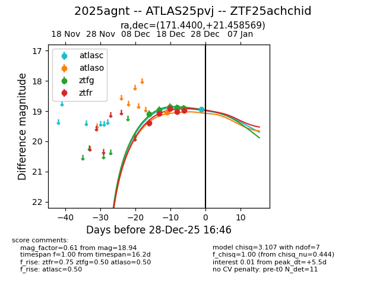
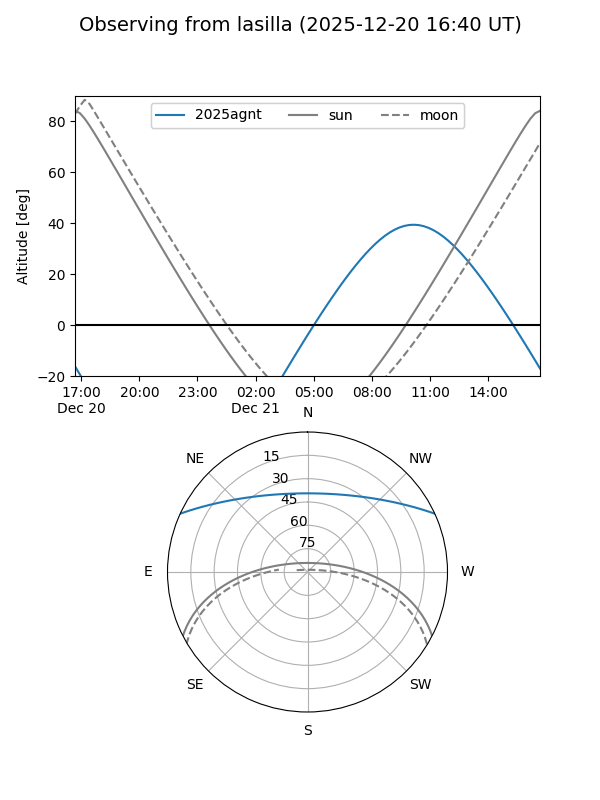
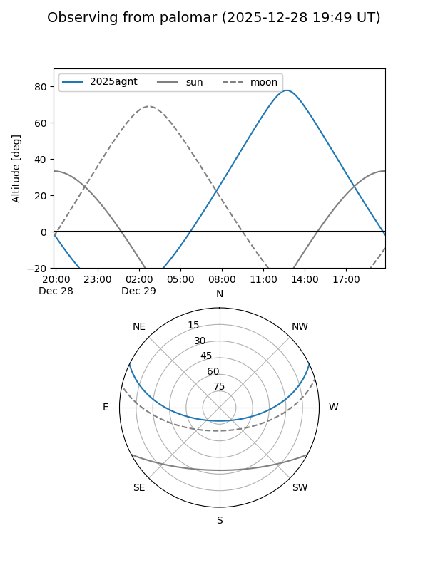
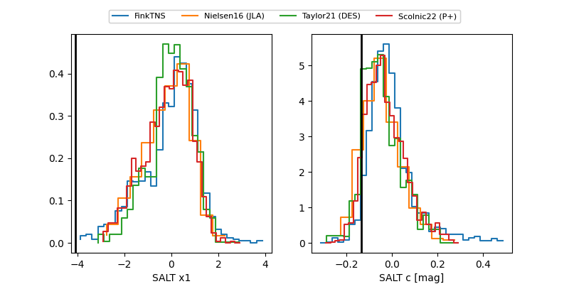

2025agnt
Target 2025agnt at 2025-12-28 16:47
Aliases and brokers:
FINK: fink-portal.org/ZTF25achchid
Lasair: lasair-ztf.lsst.ac.uk/objects/ZTF25achchid
ALeRCE: alerce.online/object/ZTF25achchid
TNS: wis-tns.org/object/2025agnt
YSE: ziggy.ucolick.org/yse/transient_detail/2025agnt
alt names
ZTF25achchid (ztf,fink_ztf)
2025agnt (tns,yse)
ATLAS25pvj (atlas)
Coordinates:
equatorial (ra, dec) = 171.4400,+21.45857
equatorial (HMS+DMS) = 11:25:45.59,+21:27:30.85
galactic (l, b) = (224.4858,+69.70163)
Flags:
Photometry:
last atlasc=18.94, atlaso=19.05, ztfg=18.91, ztfr=18.97
1 atlasc, 1 atlaso, 5 ztfg, 5 ztfr detections
Lightcurve

Visibility


Additional plots
